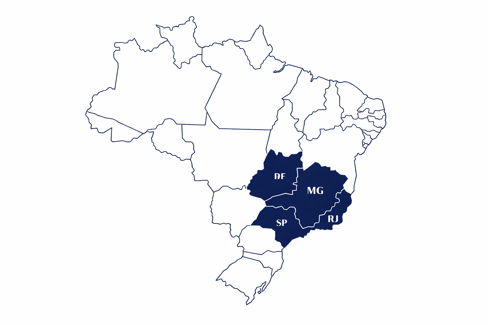
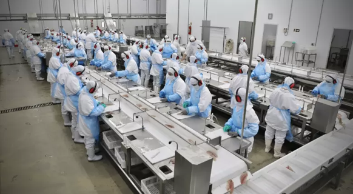

Quem Somos
A história da Riviera começou em Perdizes, desde 2014, iniciando a produção de tilápias com um propósito: transformar o mercado de pescados, levando qualidade em diferentes cortes do produto até você.
A qualidade que buscamos é aperfeiçoada diariamente nas diversas etapas da nossa produção, desde a criação de tilápias até a distribuição para os varejistas.
Desenvolvemos uma ração própria para alimentação e crescimento das tilápias, sendo a Riviera totalmente responsável pelo processo.
O resultado você vê no seu prato: uma carne bem mais macia e saborosa.
Os cortes de carne originadas desse processo são embalados com um rígido controle de qualidade, garantindo 100% do peso final, sem adição de água ou mesmo produtos químicos.
Onde Estamos

Qualidade
A Riviera produz sua própria ração para alimentação das tilápias.

Nossa
Missão
Fornecer produtos de qualidade despertando o hábito pelo consumo de pescados.
Nossa
Visão
Ser referência nacional em qualidade no mercado de pescados.
Nossos
Valores
Qualidade, responsabilidade, ética, integridade, confiança, segurança e honestidade.